19. Utilisation de l’ORM SQLALCHEMY
Le chapitre précédent a montré que dans certains cas on pouvait écrire du code indépendant du SGBD utilisé avec l’architecture suivante :
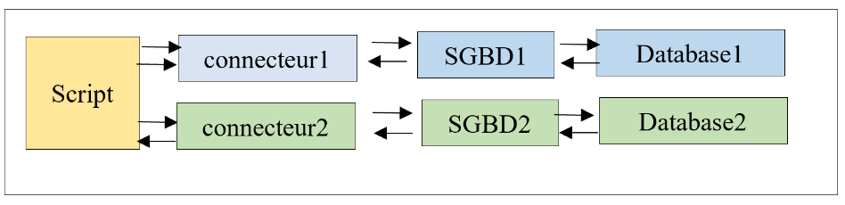
Dans ce chapitre nous allons utiliser l’ORM (Object Relational Mapper) [sqlalchemy] pour accéder aux SGBD de façon uniforme quelque soit le SGBD utilisé. Un ORM permet deux choses :
- il permet à un script de dialoguer avec le SGBD sans émettre d’ordres SQL ;
- il masque au script les particularités de chaque SGBD ; L’architecture devient la suivante :
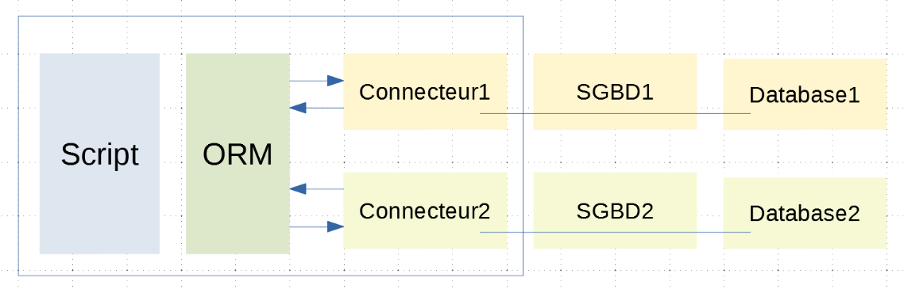
Le script est désormais séparé des connecteurs par l’ORM. Il dialogue avec l’ORM avec des classes et des méthodes. Il n’exécute pas de code SQL. C’est l’ORM qui le fait avec les connecteurs auxquels il est relié. Il cache au script les particularités de ces connecteurs. Aussi le code du script est-il insensible à un changement de connecteur (donc du SGBD) ;
L’arborescence des scripts étudiés sera la suivante :
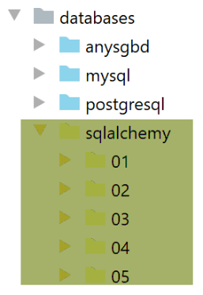
19.1. Installation de l’ORM [sqlalchemy]
L’ORM [sqlalchemy] vient sous la forme d’un package python qu’il faut installer dans un terminal Python :
19.2. Scripts 01 : les bases
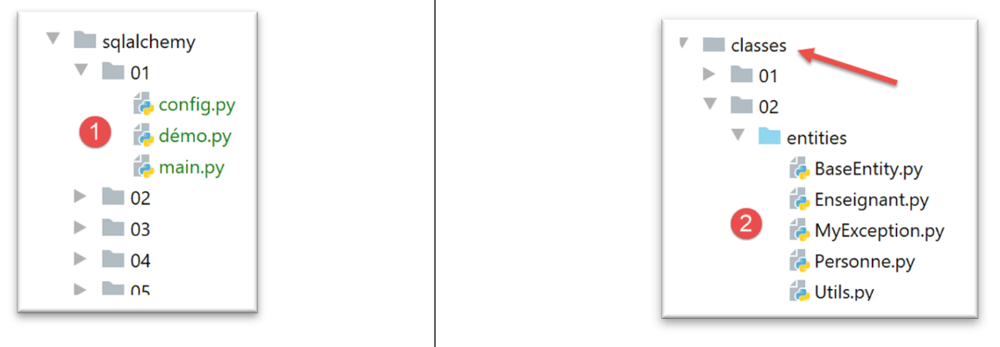
- en [1], les scripts qui vont être étudiés. Ces scripts vont utiliser les classes de [2] : BaseEntity, MyException, Personne, Utils ;
19.2.1. Configuration
Le fichier [config] configure l’application de la façon suivante :
Commentaires
- ligne 8 : on met dans le Python Path le dossier contenant les classes [BaseEntity, MyException, Personne, Utils] ;
- lignes 12-13 : on fixe le Python Path de l’application ;
- lignes 16-17 : on se rappelle peut-être que la classe |BaseEntity| a un attribut de classe nommé [excluded_keys]. Cet attribut est une liste dans laquelle on met les propriétés de la classe qu’on ne veut pas voir apparaître dans le dictionnaire de celle-ci (fonction asdict). Ici on exclut la propriété [_sa_instance_state] de l’état de la classe [Personne]. On verra bientôt pourquoi ;
19.2.2. Script [démo]
Le script [démo] montre une première utilisation de l’ORM [sqlalchemy] :
Commentaires
- lignes 1-4 : on configure l’application ;
- lignes 6-10 : on importe les modules nécessaires au script ;
- ligne 13 : [MetaData] est une classe de [sqlalchemy] ;
- lignes 15-22 : [Table] est une classe de [sqlalchemy]. Elle permet de décrire une table d’une base de données. Ici, nous allons décrire la table [personnes] de la base MySQL [dbpersonnes] étudiée au chapitre |MySQL| ;
- ligne 16 : le 1er paramètre [personnes] est le nom de la table décrite ;
- ligne 16 : le second paramètre [metadata] est l’instance [MetaData] créée ligne 13 ;
- lignes 17-22 : chacun des paramètres suivants décrit une colonne de la table avec une syntaxe propre à [sqlalchemy] mais proche de la syntaxe SQL ;
- chaque colonne se décrit avec une instance de la classe [Column] de [sqlalchemy] ;
- le 1er paramètre est le nom de la colonne ;
- le second paramètre est son type ;
- les paramètres suivants sont des paramètres nommés :
- ligne 17 : [primary_key=True] pour indiquer que la colonne [id] est clé primaire de la table [personnes] ;
- ligne 18 : [nullable=False] pour indiquer qu’uen colonne doit forcément avoir une valeur lorsqu’une ligne est insérée dans la table ;
- ligne 21 : enfin la classe [UniqueConstraint] permet de décrire une contrainte d’unicité. Ici on indique que les colonnes (nom, prenom) doivent être uniques dans la table. La propriété nommée [name] permet de donner un nom à cette constrainte. Ici, il faut distinguer deux cas :
- on décrit une table existante. Il faut alors chercher le nom de la contrainte dans les propriétés de la table (phpMyAdmin ou pgAdmin) ;
- on décrit une table que l’on va créer. Alors on met le nom que l’on veut ;
-
lignes 23-25 : on crée une personne [personne1] et on affiche son dictionnaire [dict]. On va avoir ici :
-
lignes 27-33 : on fait un mapping, ç-à-d qu’on crée une correspondance entre la classe [Personne] et la table [personnes]. C’est essentiellement une correspondance [propriétés de la classe colonnes de la table]. La fonction [mapper] accepte ici trois paramètres :
- ligne 28 : le 1er paramètre est le nom de la classe pour laquelle on fait le mapping ;
- ligne 28 : le second paramètre est la table à laquelle elle va être associée. Celle-ci est l’objet [Table] créé ligne 16 ;
- ligne 28 : le 3ième paramètre est ici un paramètre nommé [properties]. C’est un dictionnaire dans lequel les clés sont les propriétés de la classe mappée et les valeurs les colonnes de la table mappée. Pour désigner la colonne X de la table [personnes_table], on écrit [personnes_table.c.X] ;
-
lignes 35-36 : on réaffiche la personne [personne1] une fois le mapping fait. On constate qu’elle n’a pas changé :
-
lignes 37-39 : on crée une nouvelle personne [personne2] et on l’affiche. On a alors l’affichage suivant :
On constate que le dictionnaire [dict] a été profondément modifié :
- une nouvelle propriété [_sa_instance_state] apparaît. On voit que c’est un objet de l’ORM [sqlalchemy] ;
- les autres propriétés ont été débarrassées de leur préfixe qui indiquait à quelle classe elles appartenaient ; On peut donc conclure que l’opération de mapping des lignes 27-33 a modifié la classe [Personne].
Lorsqu’on voudra afficher l’état d’un objet [Personne], on ne voudra pas en général de la propriété [_sa_instance_state]. Elle n’est là en effet que pour la cuisine interne de [sqlalchemy] et en général elle ne nous intéresse pas. C’est pourquoi on a écrit dans le script [config] :
19.2.3. Le script [main]
Le script [main] va manipuler la table [personnes] de la base MySQL [dbpersonnes] en s’interfaçant avec [sqlalchemy]. Pour comprendre la suite, il faut se rappeler l’architecture utilisée ici :
Si [Database1] est la base [dbpersonnes], on voit que la liaison entre le script et cette base passe par deux entités :
- le connecteur Python au SGBD MySQL ;
- le SGBD MySQL ; Le script [main] va dialoguer avec l’ORM qui va ensuite dialoguer avec le connecteur Python. L’ORM dialogue avec ce connecteur avec les outils décrits dans les paragraphes |MySQL| et |PostgreSQL| notamment en émettant des ordres SQL. Le script [main] ne va pas utiliser d’ordres SQL. Il va s’appuyer sur l’API (Application Programming Interface) de l’ORM, faite de classes et d’interfaces.
Le script [main] est le suivant :
Commentaires
- lignes 1-4 : l’application est configurée ;
- lignes 7-9 : on importe toute une série de classes et d’interfaces de la bibliothèque [sqlalchemy] ;
- ligne 11 : la classe [Personne] est importée ;
- ligne 14 : la chaîne de connexion à la base de données. Elle précise :
- le SGBD utilisé (mysql) ;
- le connecteur Python utilisé (mysql.connector sans le .) ;
- l’utilisateur qui se connecte (admpersonnes) ;
- son mot de passe (nobody) ;
- la machine sur laquelle se trouve le SGBD (localhost=machine sur laquelle se trouve le script qui s’exécute) ;
-
le nom de la base de données (dbpersonnes) ; Avec ces informations, [sqlalchemy] peut se connecter à la base de données. A noter que le connecteur Python utilisé doit être déjà installé. [sqlalchemy] ne le fait pas.
-
lignes 19-26 : description de la table [personnes] ;
- lignes 28-34 : mapping entre la classe [Personne] et la table [personnes] ;
- lignes 36-38 : la plupart des opérations [sqlalchemy] se font dans une session. La notion de session [sqlalchemy] est proche de celle de transaction SQL. Les sessions sont crées à partir de la classe [Session] rendue par la fonction [sessionmaker] de la ligne 37 ;
- ligne 38 : la classe [Session] est associée à la base [dbpersonnes] via la chaîne de connexion de la ligne 14 ;
- ligne 43 : on crée une session. Comme il a été dit, on peut rapprocher une session d’une transaction ;
- lignes 45-46 : la méthode [Session.execute] permet d’exécuter un ordre SQL. Ce n’est pas quelque chose de courant puisqu’on a dit que l’ORM permettait d’éviter le langage SQL ;
- lignes 48-49 : la méthode [metadata.create_all] permet de créer toutes les tables utilisant l’instance [MetaData] de la ligne 17. Nous n’en avons qu’une : la table [personnes] définie lignes 20-26. [sqlalchemy] va utiliser l’information de ces lignes pour créer la table. On a là un premier intérêt de l’ORM : il cache les spécificités des SGBD. En effet, l’ordre SQL [create] peut être très différent d’un SGBD à l’autre à cause des types donnés aux colonnes. Il n’y a pas eu d’uniformisation SQL des types de données. Ainsi l’ordre [create] varie d’un SGBD à l’autre. Ici, grâce à [sqlalchemy] :
- nous décrivons de façon unique la table que nous désirons ;
- [sqlalchemy] se débrouille pour générer le [create] qui va bien pour le SGBD qu’il a en face de lui ;
- ligne 52 : on ajoute un objet [Personne] à la session. Cela ne l’ajoute pas automatiquement en base de données. En effet, un ORM suit ses propres règles pour se synchroniser avec la base de données. Il va toujours chercher à optimiser le nombre de requêtes qu’il fait. Prenons un exemple. Le script ajoute (add) deux personnes (personne1, personne2) dans la session puis fait ensuite une requête : il veut voir toutes les personnes présentes dans la table. [sqlalchemy] peut procéder ainsi :
- l’ajout de [personne1] peut se faire en mémoire. Il n’y a pas besoin pour l’instant de le mettre en base de données ;
- idem pour [personne2] ;
-
vient ensuite la requête de type [select]. Il faut alors récupérer toutes les lignes de la table [personnes]. [sqlalchemy] va alors mettre [personne1, personne2] en base puis faire la requête ; [sqlalchemy] va ainsi faire des optimisations transparentes pour le développeur.
-
ligne 56 : pour faire une requête de type [select] (je veux voir …), on utilise la méthode [Session.query]. Le paramètre de la méthode [query] est la classe mappée avec la table interrogée. Cette méthode rend un type [Query]. La méthode [Query.all] demande tous les objets [Personne] de la session. On lui ramène toutes les lignes de la table [personnes], chacune sous la forme d’un objet [Personne]. Pour faire cela, [sqlalchemy] utilise le mapping qui a été fait entre la classe [Personne] et la table [personnes]. Le résultat de la ligne 56 est une liste d’objets [Personne] ;
- lignes 58-61 : on affiche les éléments de la liste [personnes]. Parce que la classe [Personne] dérive de la classe [BaseEntity], la méthode [Personne.str] utilisée ici implicitement dans la ligne 61, est en fait la méthode [BaseEntity.str] qui rend la chaîne jSON de l’objet appelant. Cette chaîne est la chaîne jSON du dictionnaire [Personne.asdict] (cf. |BaseEntity|). Nous avons dit qu’après le mapping, on allait trouver la propriété [_sa_instance_state] dans chaque objet [Personne]. Or la valeur de cette propriété n’est pas un type [BaseEntity]. Il faut donc l’exclure du dictionnaire de la classe [Personne] sinon l’affichage ‘plante’. C’est ce qui a été fait dans le script [config] ;
- lignes 63-65 : on ajoute deux autres personnes qui ont les mêmes nom et prénom. Or on a une contrainte d’unicité sur l’union de ces deux colonnes. Une erreur devrait donc se produire. C’est ce qu’on cherche à voir ;
- lignes 67-68 : on demande de nouveau la liste de toutes les personnes de la base ;
- lignes 70-73 : et on les affiche ;
- lignes 75-76 : la session est validée ‘commitée’. Comme son nom l’indique, la transaction sous-jacente va être validée ;
- on va voir à l’exécution que les lignes 67-76 ne vont pas être exécutées à cause de l’exception produite par la ligne 65. On va alors aller aux lignes 78-84 pour gérer l’exception ;
- ligne 78 : l’exception [InterfaceError] se produit si [sqlalchemy] n’arrive pas à se connecter à la base de données [dbpersonnes]. L’exception [IntegrityError] se produit ligne 65 ;
- ligne 80 : on affiche l’erreur ;
- lignes 82-84 : si la session existe, on l’annule. Cela revient à annuler la transaction sous-jacente ;
- lignes 85-88 : dans tous les cas, erreur ou pas, la session est fermée pour libérer des ressources ; Les résultats de l’exécution sont les suivants :
- lignes 2-3 : la liste des personnes après la 1ère insertion ;
- ligne 5 : l’exception [IntegrityError] qui s’est produite lorsqu’on a ajouté deux personnes ayant les mêmes nom et prénom ;
- lignes 6-7 : on notera l’ordre SQL qui a échoué. C’est un ordre INSERT paramétré : [sqlalchemy] a inséré les deux personnes avec un unique INSERT. On voit là qu’il a essayé d’optimiser les ordres SQL émis ; Maintenant allons-voir, avec phpMyAdmin, le contenu de la table [personnes] :
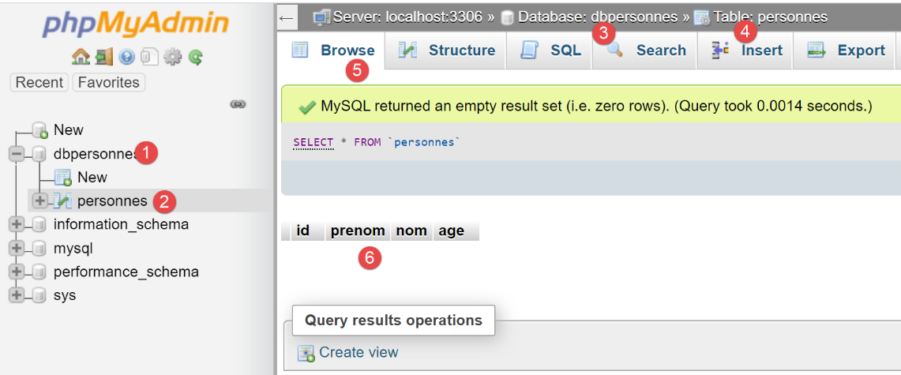
On voit en [6] que la table est vide. Il n’y a même pas la 1ère personne que le script avait mis dans la session. Ceci parce que celle-ci se déroulait dans une transaction et que celle-ci a été défaite dans la clause [except] du script [main].
Procédons maintenant à la modification suivante dans [main] :
Après avoir ajouté une personne ligne 2, nous décommentons la ligne 3. L’opération [session.commit] va valider la transaction sous-jacente et une nouvelle transaction va démarrer. Après exécution, le contenu de la table [personnes] est le suivant :
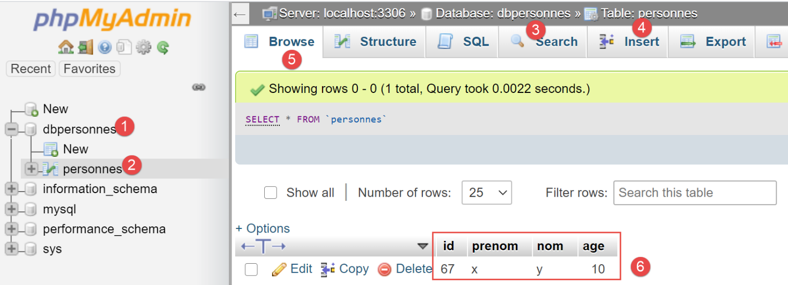
On voit en [6] que la 1ère insertion a été conservée. Cela vient du fait qu’elle a été faite au sein d’une transaction 1 et que l’erreur qui a suivi a été faite au sein d’une transaction 2.
19.3. Scripts 02 : les mappings de [sqlalchemy]
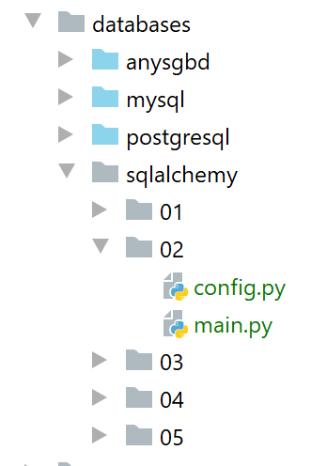
Les scripts 02 sont une variante des scripts 01. On essaie de faire le maximum de configurations dans [config.py]. On y configure maintenant l’environnement [sqlalchemy] de l’application :
Commentaires
- lignes 2-12 : configuration du Python Path ;
- lignes 14-45 : on configure l’environnement [sqlalchemy] ;
- lignes 47-52 : l’environnement [sqlalchemy] est mis dans le dictionnaire de la configuration ;
- lignes 54-56 : on configure la classe [Personne] ; Avec cette configuration le script [main] devient le suivant :
Les résultats de l’exécution sont les suivants :
Dans phpMyAdmin, la table [personnes] est devenue la suivante :
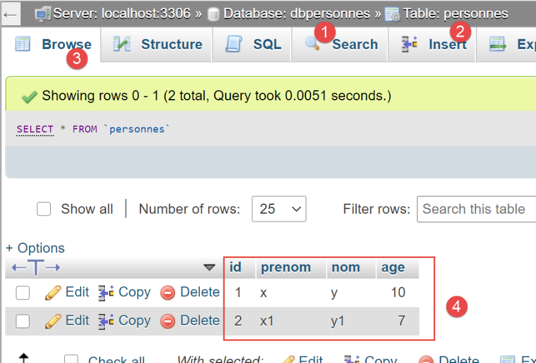
Maintenant, regardons la table [personnes] générée par [sqlalchemy] :

- en [6], les types utilisés pour les différentes colonnes ;
- en [7], on voit que la colonne [id] a l’attribut [AUTO_INCREMENT]. Cela signifie que lors de l’insertion d’une ligne dans la table, si cette ligne n’a pas de valeur pour la colonne [id], celle-ci sera générée par MySQL de façon incrémentale : 1, 2, 3, … Cette propriété nous évite de nous préoccuper de la valeur de la clé primaire lorsque nous faisons une insertion dans la table : nous laissons MySQL la générer ;
- en [8], on voit que la colonne [id] est clé primaire ;
- en [9], on retrouve la contrainte d’unicité sur les champs [nom, prenom] ;
19.4. Scripts 03 : manipulation des entités de la session [sqlalchemy]
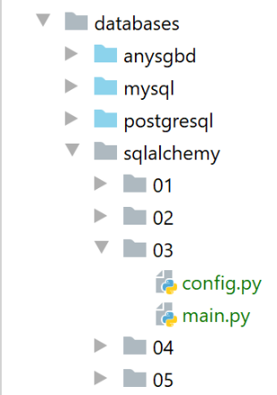
Le fichier de configuration [config] est le même que dans l’exemple précédent. Dans le script [main] on fait les opérations classiques [INSERT, UPDATE, DELETE, SELECT] sur la table [personnes] à l’aide des méthodes de [sqlalchemy] :
Commentaires
- lignes 20-25 : la fonction [affiche_personnes] affiche les éléments d’une liste de personnes ;
- lignes 12-18 : la fonction [affiche_table] affiche le contenu de la table [personnes] ;
- lignes 34-36 : on supprime la table [personnes]. Contrairement aux versions précédentes, on n’utilise pas un ordre SQL mais une méthode de [sqlalchemy] :
- config["personnes_table"] est l’objet [Table] décrivant la table [personnes] ;
- config["engine"] est la chaîne de connexion à la base de données [dbpersonnes] ;
- le paramètre nommé [checkfirst=True] demande à ce que l’opération ne se fasse que si la table [personnes] existe ;
- lignes 38-39 : la table [personnes] est recréée ;
- lignes 41-44 : trois personnes sont mises dans la session. On rappelle qu’elles ne sont pas forcément insérées immédiatement dans la table [personnes]. Cela dépend de la stratégie de [sqlalchemy] qui vise la performance ;
- lignes 46-47 : le contenu de la table [personnes] es affiché. Si les insertions des trois personnes n’avaient pas encore été faites elles le sont maintenant à cause de cette demande ;
- lignes 49-50 : un exemple d’utilisation de la méthode [order_by] qui permet de présenter les résultats d’une requête dans un certain ordre. La syntaxe [order_by(critère1, critère2)] affiche les résultats d’abord selon le critère [critère1] et lorsque des lignes présentent la même valeur de [critère1], elles sont alors triées selon le critère [critère2]. On peut mettre plusieurs critères ainsi ;
- lignes 55-59 : introduisent la notion de filtre avec la méthode [filter]. La notation [filter(critère1, critère2)] fait un ET logique (AND) entre les critère utilisés ;
- lignes 64-67 : une nouvelle personne est mise en session ;
- lignes 70-71 : un autre exemple de requête filtrée. La fonction [func.lower(param)] rend [param] en minuscules. Il existe ainsi d’autres fonctions disponibles notées [func.xx]. Dans l’expression de la ligne 71 :
- [session.query.filter] rend une liste d’objets [Personne] ;
- [session.query.filter.first] rend le 1er élément de cette liste ;
- ligne 77 : on supprime un élément de la session ;
- ligne 86 : la session est validée ; Les résultats de l’exécution sont les suivants :
- lignes 4-6 : le contenu de la session ;
- lignes 8-10 : le contenu de la session dans l’ordre décroissant des noms ;
- lignes 12-13 : le contenu de la session pour les personnes dont l’âge est dans l’intervalle [20, 40] ;
- ligne 15 : la personne de nom « bruneau » ; Dans phpMyAdmin, le contenu de la table [personnes] à la fin de l’exécution est le suivant :
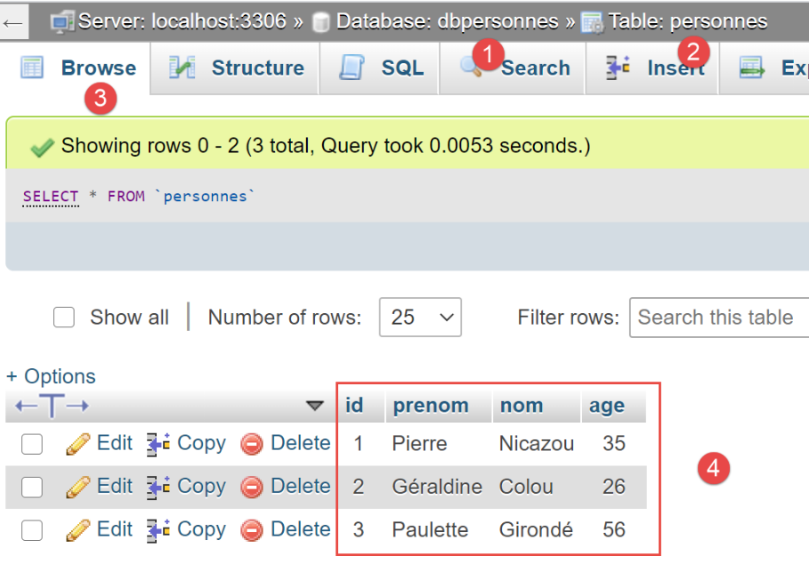
19.5. Scripts 04 : utilisation d’une base [PostgreSQL]
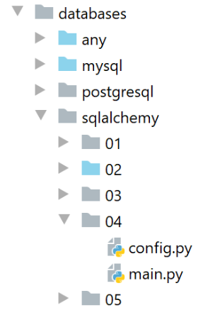
Le dossier [04] est une copie du dossier [03]. On change une unique chose, la chaîne de connexion dans le fichier [config] :
Désormais cette chaîne de connexion désigne la base [dbpersonnes] d’un SGBD [PostgreSQL]. On notera l’utilisation du connecteur [psycopg2]. Il faut que celui-ci soit installé.
L’exécution du script [main] donne les résultats suivants :
Avec l’outil [pgAdmin] (cf. paragraphe |pgAdmin|), la table [personnes] est dans l’état suivant :
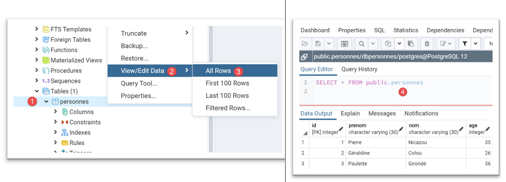
La table [personnes] a été générée avec le code SQL suivant :
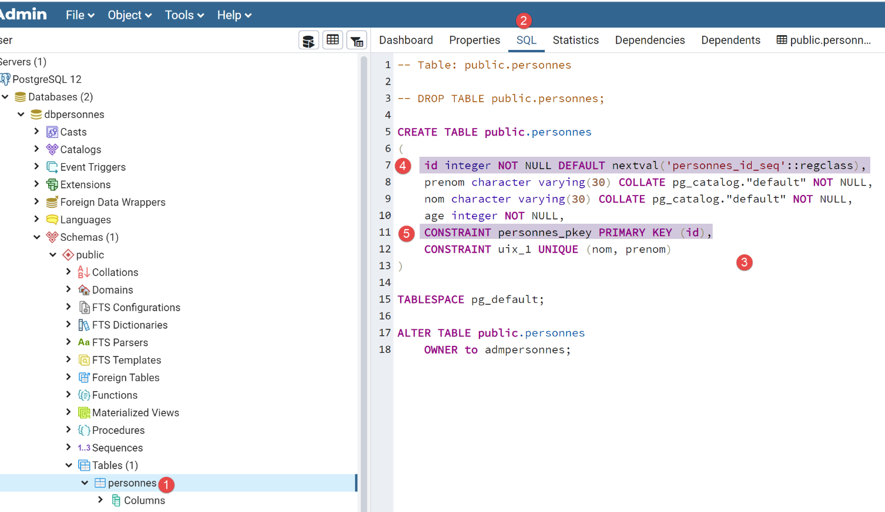
- en [4-5], on voit que la colonne [id] est clé primaire. On voit également qu’elle a une valeur par défaut [mot clé DEFAULT] qui fait que si on insère une ligne sans clé primaire, celle-ci sera générée par le SGBD. C’est un fonctionnement fréquent : on laisse le SGBD générer les clés primaires ; Cette version 05 des scripts [sqlalchemy] montre bien la facilité de passer d’un SGBD à l’autre : il a suffi de changer la chaîne de connexion dans un script de configuration. Rien d’autre n’a changé. Si on compare les types des colonnes [id, nom, prenom, age] ci-dessus avec ceux de la table MySQL de l’exemple |02|, on voit qu’ils sont différents. [sqlalchemy] les adapte au SGBD utilisé. Cette facilité de s’adapter à un nouveau SGBD est une raison suffisante pour adopter [sqlalchemy] ou un autre ORM.
19.6. Scripts 05 : exemple complet
L’exemple étudié est une reprise de celui étudié au paragraphe |troiscouches-v01|. Cet exemple présentait une architecture à trois couches [ui, métier, dao] qui manipulait des entités [Classe, Elève, Matière, Note]. Les entités étaient codées en dur dans une couche [dao]. Nous les mettons maintenant dans une base de données. Nous utiliserons deux SGBD : MySQL et PostgreSQL.
19.6.1. L’architecture de l’application
L’architecture de l’application sera la suivante :
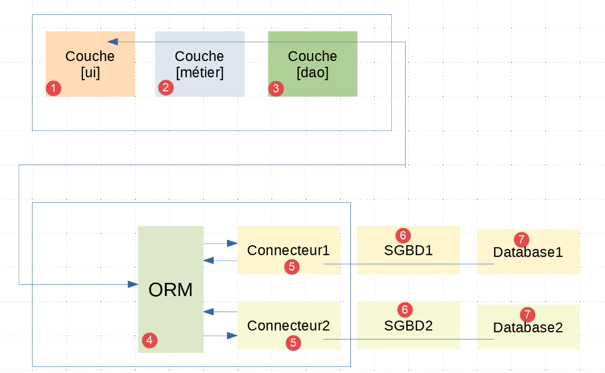
- en [1-3], on trouve les couches [ui, métier, dao] déjà présentes dans l’exemple |troiscouches-v01|. La couche [dao] communique désormais avec la couche [ORM] ;
- les couches [1-5] sont implémentées par du code Python ;
19.6.2. Les bases de données
Nous construisons une base MySQL nommée [dbecole] propriété de l’utilisateur [admecole] ayant le mot de passe [mdpecole]. Pour cela nous suivons la procédure décrite au paragraphe |création d'une base de données| :
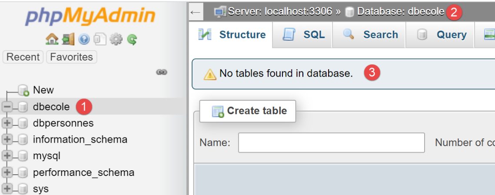
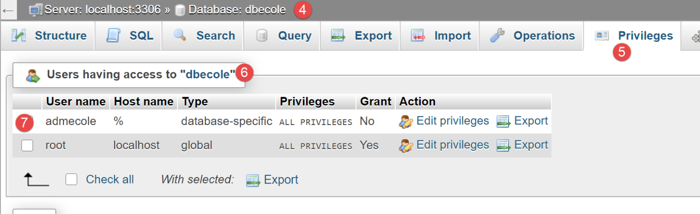
- en [1], la base [dbecole] sans tables [3] ;
- en [7], l’utilisateur [admecole] a tous les privilèges sur cette base de données ; On fait de même avec le SGBD PostgreSQL. Nous construisons une base nommée [dbecole] propriété de l’utilisateur [admecole] ayant le mot de passe [mdpecole]. Pour cela nous suivons la procédure décrite au paragraphe |création d'une base de données| :
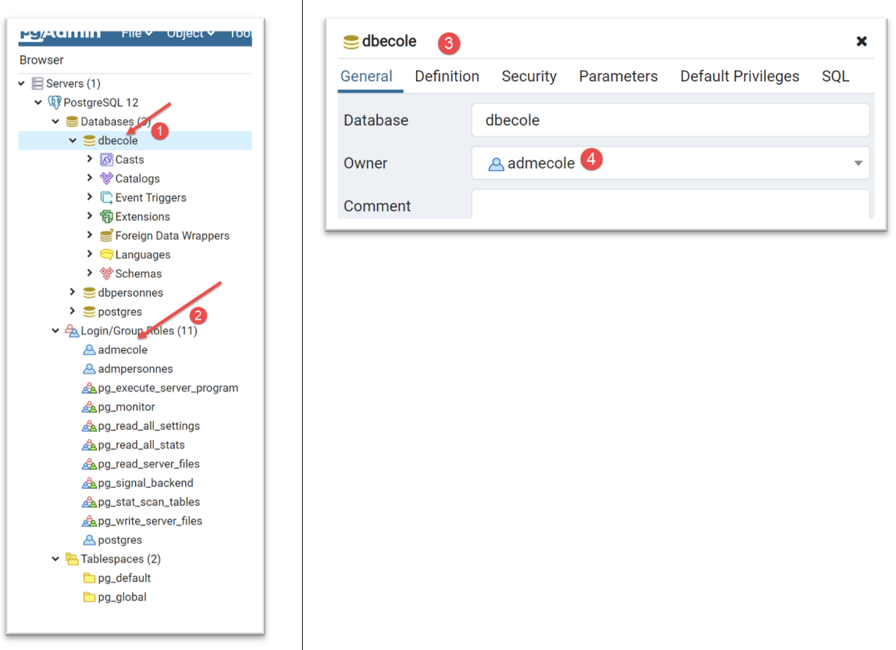
- en [1], la base [dbecole] ;
- en [2], l’utilisateur [admecole] ;
- en [3-4], la base [dbecole] est la propriété de l’utilisateur [admecole] ;
19.6.3. Les entités manipulées par l’application
Dans l’application |troiscouches v01|, les entités manipulées étaient les suivantes (cf. |entités|). Ce sont ces entités qui vont être stockées dans les bases de données précédentes. Nous ne dupliquerons pas ces entités dans la nouvelle application. Nous irons les chercher là où elles sont déjà définies.
La classe [Classe] :
La classe [Elève] :
La classe [Matière] :
La classe [Note] :
19.6.4. Configuration
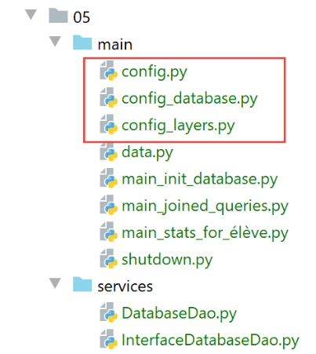
La configuration a été éclatée sur plusieurs fichiers :
- la configuration générale dans [config.py] : elle établit le Python Path de l’application et instancie les couches de l’architecture ;
- la configuration de [sqlalchemy] dans [config_database] : elle fait les mappings Classes / Tables ;
- les couches de l’application sont configurées dans [config_layers] ; Le fichier [config] est le suivant :
- lignes 4-27 : construction du Python Path de l’application ;
- lignes 29-32 : configuration [sqlalchemy] ;
- lignes 34-37 : configuration des couches de l’application ; Le fichier [config_database] est le suivant :
1 2 3 4 5 6 7 8 9 10 11 12 13 14 15 16 17 18 19 20 21 22 23 24 25 26 27 28 29 30 31 32 33 34 35 36 37 38 39 40 41 42 43 44 45 46 47 48 49 50 51 52 53 54 55 56 57 58 59 60 61 62 63 64 65 66 67 68 69 70 71 72 73 74 75 76 77 78 79 80 81 82 83 84 85 86 87 88 89 90 91 92 93 94 95 96 97 98 99 100 101 102 103 104 105 106 107 108 109 | |
Commentaires
- lignes 1-4 : la fonction [configure] reçoit un dictionnaire en paramètre. Seule la clé [sgbd] est exploitée. Elle vaut [mysql] si la base est une base MySQL, [pgres] si la base est une base PostgreSQL ;
- lignes 6-9 : imports d’éléments de [sqlalchemy]. Le script [config_database] fait les mappings entre les tables de la base [dbecole] et les entités [Classes, Elève, Matière, Note]. Dans la table, les données de l’entité sont encapsulées dans une ligne. Dans le code Python, elles sont encapsulées dans un objet. D’où le nom ORM (Object Relational Mapper) : l’ORM fait un mapping (une liaison) entre les lignes d’une base de données relationnelle et des objets. Dans cette application, nous avons quatre entités [Classe, Elève, Matière, Note] qui seront reliées à quatre tables [classes, élèves, matières, notes]. Notez que les noms des tables peuvent comporter des caractères accentués ;
- lignes 11-17 : la chaîne de connexion à la base de données exploitée. Celle-ci dépend de l’élément config[‘sgbd’] ;
- lignes 24-28 : les entités de l’application qui vont faire l’objet d’un mapping [sqlalchemy]. Lorsque ces lignes seront exécutées, le Python Path aura déjà été établi par le script [config] ;
- lignes 30-40 : le mapping entre l’entité [Classe] et la table [classes] ;
- lignes 30-35 : la table [classes] est définie avec la classe [Table] de [sqlalchemy]. Nous indiquons que cette table a deux colonnes :
- la colonne [id] qui est clé primaire et qui est le n° de la classe, ligne 33 ;
- la colonne [nom] qui contient le nom de la classe, ligne 34 ;
- lignes 31-32 : notez que la syntaxe x=y=z est légale en Python : la valeur de z est affectée à y puis la valeur de y à x ;
- lignes 37-40 : on liste les correspondances entre les colonnes de la table [classes] et les propriétés de l’entité [Classe] ;
- lignes 42-57 : le mapping entre l’entité [Elève] et la table [élèves] ;
- lignes 51-57 : la table [élèves] est définie avec la classe [Table] de [sqlalchemy]. Nous indiquons que cette table a quatre colonnes :
- la colonne [id] qui est clé primaire et qui est le n° de l’élève, ligne 45 ;
- la colonne [nom] qui contient le nom de l’élève, ligne 46 ;
- la colonne [prénom] qui contient le prénom de l’élève, ligne 47. Notez qu’un nom de colonne peut comporter des caractères accentués ;
- ligne 49, la colonne [classe_id] qui contiendra le n° de la classe à laquelle appartient l’élève. On appelle cela une clé étrangère. [élèves.classe_id] est une clé étrangère (ForeignKey) sur la colonne [classes.id]. Cela signifie que la valeur de [élèves.classe_id] doit exister dans la colonne [classes.id] ;
- lignes 51-57 : on liste les correspondances entre les colonnes de la table [élèves] et les propriétés de l’entité [Elève] :
- les lignes 53-55 sont simples à comprendre ;
- la ligne 56 est plus difficile : elle définit la valeur de la propriété [Elève.classe] comme étant calculée par la relation (relationship) de clé étrangère qui relie les tables [élèves] et [classes]. Les paramètres de la fonction [relationship] sont les suivants :
- [Classe] : c’est le nom de l’entité avec laquelle l’entité [Elève] a une relation de clé étrangère. Celle-ci doit se matérialiser dans la table [élèves] par la présence d’une clé étrangère sur la table [classes]. Nous savons que celle-ci existe ;
- [backref="élèves"] : le nom d’une propriété qui sera ajoutée à l’entité [Classe]. [Classe.élèves] sera la liste de tous les élèves de la classe. Cette propriété ne doit pas déjà exister. Si elle existe déjà, il faut simplement choisir un autre nom ici pour [backref]. Le développeur n’a pas à gérer cette propriété. C’est [sqlalchemy] qui le fera. Il doit simplement savoir qu’elle existe, ajoutée par [sqlalchemy], et qu’il peut l’utiliser dans son code ;
- [lazy=’select’] : cela signifie que l’ORM ne doit pas chercher à donner immédiatement une valeur à la propriété [Elève.classe]. Il ne doit chercher sa valeur que lorsque le code la demande explicitement. Ainsi :
- si le code demande la liste de tous les élèves, ceux-ci seront ramenés mais leur propriété [classe] ne sera pas calculée ;
- un peu plus tard, le code s’intéresse à un élève [e] précis et référence sa classe [e.classe]. Cette référence va alors forcer [sqlalchemy] à faire une requête en base pour ramener la classe de l’élève, ceci de façon transparente pour le développeur ;
- aussi mettre [lazy=’select’] vise à éviter les requêtes inutiles en base ;
- ligne 56 : lorsque l’ORM récupère une ligne de la table [élèves], il récupère les informations [id, nom, prénom, classe_id]. A partir de là, il doit construire un objet Elève(id, nom, prénom, classe). Pour les propriétés [id, nom, prénom] ça ne pose pas de difficultés. Pour la propriété [classe], c’est plus compliqué. Sa valeur est une référence d’objet de type [Classe]. Or l’ORM ne dispose que d’une information [élèves.classe_id]. Comme [élèves.classe_id] est une clé étrangère sur la colonne [classes.id], on lui dit ici d’utiliser cette relation pour récupérer dans la table [classes] la ligne de n° id=[élèves.classe_id] (elle existe forcément) et de créer à partir de cette ligne l’objet [Classe] attendu par la propriété [Elève.classe] ;
- lignes 59-71 : le mapping entre l’entité [Matière] et la table [matières] ;
- lignes 59-65 : définition de la table [sqlalchemy] nommée [matières] ;
- lignes 66-71 : on liste les correspondances entre les colonnes de la table [matières] et les propriétés de l’entité [Matière]. Il n’y a pas de difficultés ici ;
- lignes 73-90 : le mapping entre l’entité [Note] et la table [notes] ;
- lignes 73-82 : définition de la table [sqlalchemy] nommée [notes]. Elle a deux clés étrangères :
- ligne 79, la colonne [notes.élève_id] prend ses valeurs dans la colonne [élèves.id] ]. Cette clé étrangère matérialise le fait qu’une note est la note d’un élève précis ;
- ligne 81, la colonne [notes.matière_id] prend ses valeurs dans la colonne [matières.id]. Cette clé étrangère matérialise le fait qu’une note est une note dans une matière précise ;
- lignes 84-90 : le mapping entre l’entité [Note] et la table [notes] :
- ligne 88 : la propriété [Note.élève] doit avoir pour valeur une instance de type [Elève]. L’ORM n’a pour information dans la ligne de la table [notes] que la colonne [notes.élève_id] qui référence la colonne [élèves.id]. On dit ici d’utiliser cette relation de clé étrangère pour retrouver l’intance [Elève] dont on a la note. Par ailleurs [relationship(Elève, backref="notes", …)] va créer la nouvelle propriété [Elève.notes] qui sera la liste des notes de l’élève. Cette propriété ne doit pas déjà exister dans la classe [Elève] ;
- ligne 89 : la propriété [Note.matière] doit avoir pour valeur une instance de type [Matière]. L’ORM n’a pour information dans la ligne de la table [notes] que la colonne [notes.matière_id] qui référence la colonne [matières.id]. On dit ici d’utiliser cette relation de clé étrangère pour retrouver l’intance [Matière] dont on a la note. Par ailleurs [relationship(Matière, backref="notes", …)] va créer la nouvelle propriété [Matière.notes] qui sera la liste des notes dans la matière. Cette propriété ne doit pas déjà exister dans la classe [Matière] ;
- lignes 92-96 : on définit pour chaque entité dérivée de [BaseEntity] la liste des propriétés à exclure du dictionnaire des propriétés de l’entité (BaseEntity.asdict). Nous avons vu que [sqlalchemy] ajoutait la propriété [_sa_instance_state] à toutes entités mappées. On ne la veut pas dans le dictionnaire des propriétés. Par ailleurs on a vu que les mappings précédents avaient ajouté de nouvelles propriétés aux entités :
- [Elève.notes] : toutes les notes de l’élève ;
- [Classe.élèves] : tous les élèves de la classe ;
-
[Matière.notes] : toutes les notes de la matière ; En général, on ve veut pas ces propriétés ajoutées dans l’état de l’entité. En effet, calculer leur valeur a un coût SQL et cette valeur est souvent inutile. Ainsi si on récupère l’élève de nom ‘X’ :
-
l’ORM va ramener une entité [Elève(id, nom, prénom, classe, notes)]. A cause de [lazy=’select’], les propriétés [classe, notes] liées à des clés étrangères de la base n’auront pas été calculées ;
- maintenant si j’affiche la chaîne jSON de cet élève, on sait que ce sera la chaîne jSON du dictionnaire [asdict] de l’entité. Si les propriétés [classe] et [notes] sont dedans, [sqlalchemy] va être obligé de faire des requêtes SQL pour calculer leurs valeurs. C’est coûteux. Si on peut éviter ces requêtes, c’est préférable ;
- ici, nous avons exclu toutes les propriétés liées à une clé étrangère ;
- lignes 98-100 : instanciation et configuration d’une [Session factory] (factory=usine de production). L’objet [Session] sert à créer des sessions [sqlalchemy] adossées à des transactions ;
- lignes 102-103 : création d’une session sqlalchemy] ;
- ligne 106 : certains éléments de la configuration [sqlalchemy] sont mis dans le dictionnaire global de la configuration de l’application ;
- ligne 109 : on rend ce dictionnaire ; Le fichier [config_layers] configure les couches de l’application :
- ligne 1 : la fonction [configure] reçoit le dictionnaire de la configuration globale de l’application ;
- lignes 2-12 : les couches de l’application sont instanciées ;
- lignes 15-17 : les références des couches sont mises dans la configuration globale ;
- ligne 20 : on rend la nouvelle configuration ;
19.6.5. La couche [dao] - 1
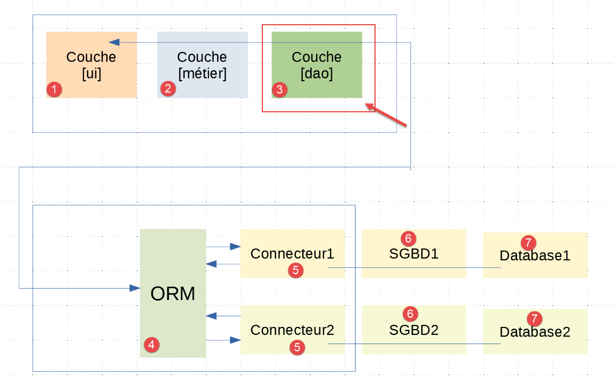
Il faut comprendre ici que la couche [dao] [3] communique avec l’ORM [sqlalchemy] [4] configuré comme il a été décrit dans le paragraphe précédent. Des trois couches [ui, métier, dao] de l’application |troiscouches v01|, seule la couche [dao] doit être réécrite. Les couches [ui, métier] sont conservées.
L’implémentation de la couche [dao] a été placée dans le dossier [services] :
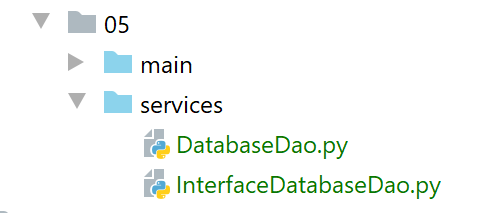
[InterfaceDatabaseDao] est l’interface de la couche [dao] :
- ligne 6 : l’interface [InterfaceDatabaseDao] dérive à la fois de la classe [ABC] pour être une classe abstraite et de l’interface [InterfaceDao] du projet |troiscouches v01| ;
- lignes 8-11 : on ajoute la méthode [init_database] aux méthodes héritées de [InterfaceDao]. Elle aura pour rôle d’initialiser la base de données avec les données du dictionnaire [data] qu’on lui passe en paramètre ligne 10 ; Rappelons que l’interface [InterfaceDao] était la suivante :
L’implémentation de la couche [dao] est la suivante :
- ligne 11 : la classe [DatabaseDao] implémente l’interface [InterfaceDatabaseDao] ;
- lignes 13-16 : le constructeur de la classe. Il reçoit en paramètre, le dictionnaire de la configuration de l’application ;
- ligne 15 : on mémorise la configuration [sqlalchemy] ;
- ligne 16 : on mémorise la session [sqlalchemy] au travers de laquelle on va manipuler la base de données ;
- ligne 18 : la méthode [init_database] initialise la base de données avec le dictionnaire [data] ; Le dictionnaire [data] est implémenté par le script [data.py] suivant :
- ligne 34 : le dictionnaire qui sera passé à la méthode [init_database]. Ce dictionnaire est composé des clés suivantes (ligne 32) :
- [élèves] : la liste des élèves ;
- [classes] : la liste des classes ;
- [matières] : la liste des matières ;
- [notes] : la liste des notes de tous les élèves dans toutes les matières ; Revenons à la méthode [init_database] :
- lignes 3-6 : on récupère des informations dans la configuration de la base de données ;
- lignes 9-14 : nous avons vu que la configuration [sqlalchemy] avait mappé quatre entités sur quatre tables [élèves, matières, classes, notes]. On commence par supprimer ces tables si elles existent ;
- lignes 16-17 : on recrée les quatre tables qu’on vient de supprimer ;
- lignes 22-25 : on met toutes les classes dans la session ;
- lignes 27-30 : on met toutes les matières dans la session ;
- lignes 32-35 : on met tous les élèves dans la session ;
- lignes 37-40 : on met toutes les notes dans la session ;
- pour faire ces ajouts, on a suivi un ordre. On a commencé par les entités n’ayant pas de relations avec d’autres entités pour terminer par celles qui en avaient. Ainsi lorsqu’on ajoute les élèves dans la session, les classes que ceux-ci référencent sont déjà en session ;
- ligne 43 : la session [sqlalchemy] est validée. Après cette opération, on est sûrs que toutes les données en session ont été synchronisées avec la base de données. En clair, elles sont arrivées dans les tables. Ceci a pu se faire grâce aux mappings qui ont été faits dans la configuration de [sqlalchemy]. [sqlalchemy] sait comment chaque entité doit être stockée dans les tables. [sqlalchemy] a également généré les clés étrangères que peuvent posséder les tables ;
- lignes 44-49 : si on rencontre un problème, la session [sqlalchemy] est annulée et ligne 49, une exception est levée ;
19.6.6. Initialisation de la base de données
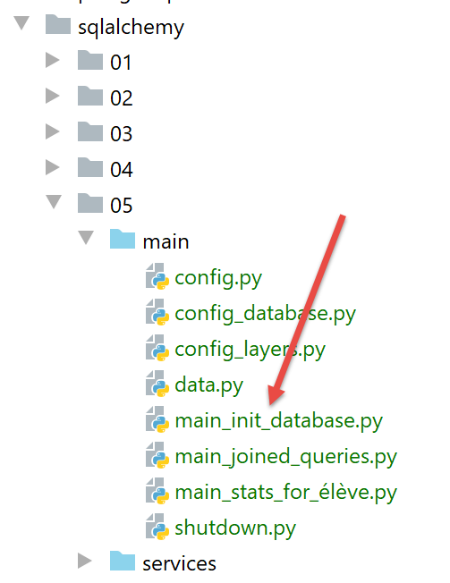
Le script [main_init_database] initialise la base de données avec le contenu du script [data.py]. Son code est le suivant :
- lignes 1-11 : le script attend un paramètre [mysql] ou [pgres] selon qu’on veut initialiser une base MySQL ou PostgreSQL ;
- lignes 13-15 : l’application est configurée pour le SGBD passé en paramètre ;
- lignes 20-22 : on récupère les données à mettre en base ;
- ligne 25 : la couche [dao] a déjà été instanciée et est accessible dans la configuration de l’application ;
- ligne 30 : la base de données est initialisée ;
- lignes 34-37 : erreur ou pas, on libère les ressources de l’application à l’aide du module [shutdown] ; Le module [shutdown.py] est le suivant :
La fonction [shutdown.execute] ferme la session [sqlalchemy] utilisée pour initialiser la base de données.
Nous créons une 1ère configuration d’exécution (cf. |configuration d’exécution|) pour exécuter [main_init_database] avec le SGBD MySQL :
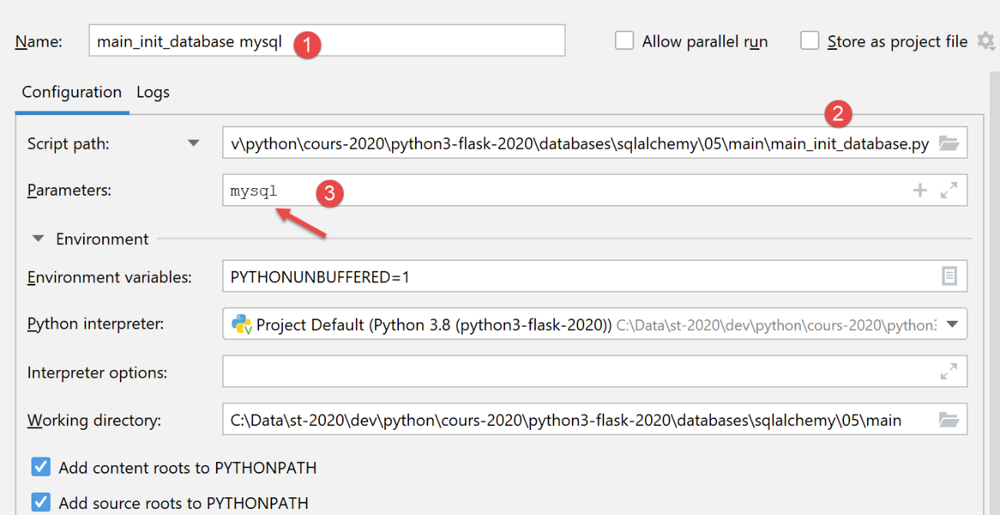
Les résultats de l’exécution de cette configuration sont les suivants dans phpMyAdmin :
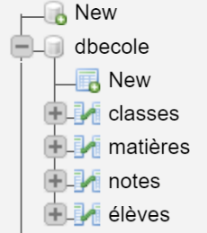
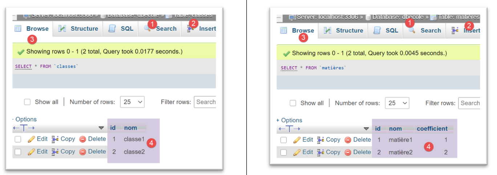
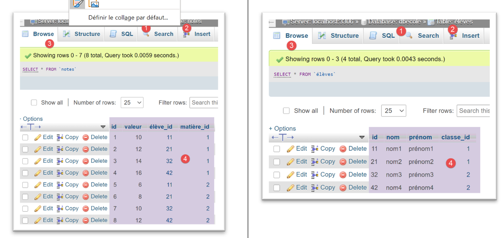
Pour le SGBD [PostgreSQL], nous utilisons la configuration d’exécution suivante :
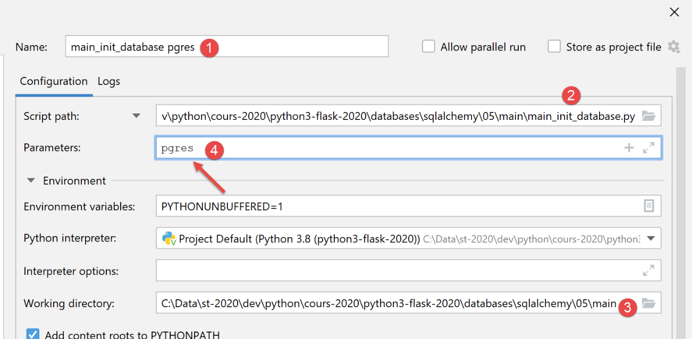
A l’exécution, les résultats dans [pgAdmin] sont les suivants :
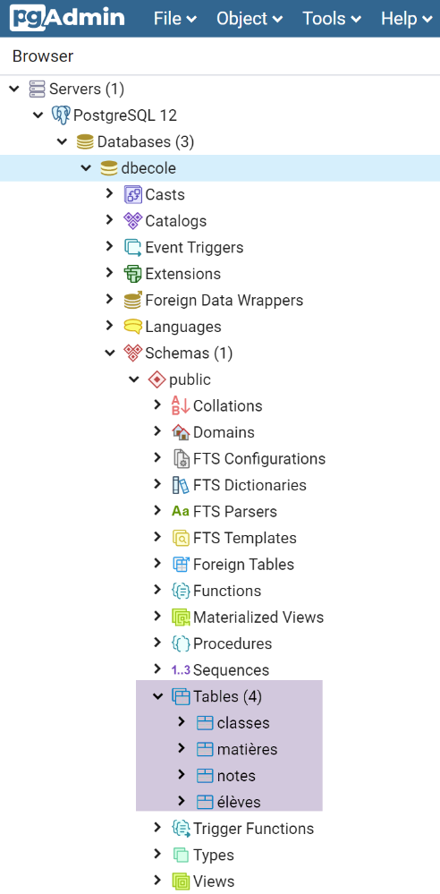
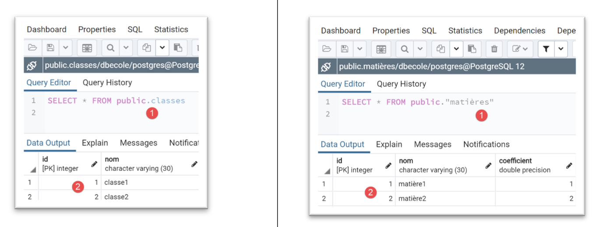
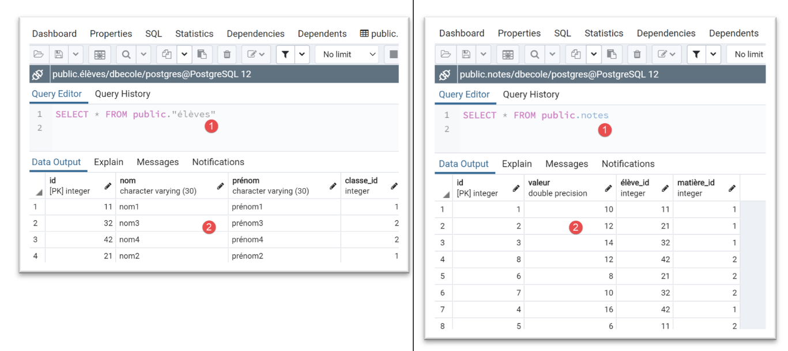
On notera la facilité avec laquelle on a pu changer de SGBD.
19.6.7. La couche [dao] – 2
Nous revenons sur la classe [DatabaseDao] qui implémente la couche [dao]. Nous n’avons montré pour l’instant que l’implémentation de la méthode [init_database]. Nous montrons maintenant l’implémentation des autres méthodes :
1 2 3 4 5 6 7 8 9 10 11 12 13 14 15 16 17 18 19 20 21 22 23 24 25 26 27 28 29 30 31 32 33 34 35 36 37 38 39 40 41 42 43 44 45 46 47 48 49 50 51 52 53 54 55 56 57 58 59 60 61 62 63 64 65 66 67 68 69 70 71 72 73 74 75 76 77 78 79 80 81 82 83 84 85 86 87 88 89 90 91 92 93 94 95 96 97 98 99 100 101 102 103 104 105 106 107 108 109 | |
- lignes 21-24 : la méthode [get_classes] doit rendre la liste des classes de l’école. Ligne 20, nous utilisons une requête déjà rencontrée ;
- lignes 26-39 : trois autres méthodes similaires pour obtenir les listes des élèves, des matières et des notes ;
- lignes 51-59 : la méthode [get_élève_by_id] doit rendre un élève identifié par son n°. Elle lance une exception si celui-ci n’existe pas ;
- ligne 54 : on utilise une requêtre filtrée. On obtient une liste vide ou avec un élément ;
- ligne 57 : si la liste récupérée n’est pas vide on rend le 1er élément de la liste ;
- sinon ligne 59, on lance une exception ;
- lignes 41-49 : la méthode [get_notes_for_élève_by_id] doit rendre les notes d’un élève identifié par son n° :
- ligne 45, on utilise la méthode [get_élève_by_id] pour obtenir l’entité Elève de l’élève ;
- ligne 47, on utilise la propriété [Elève.notes] créée par le mapping entre l’entité [Note] et la table [notes] (cf. paragraphe |configuration sqlalchemy|) et qui représente les notes de l’élève ;
- ligne 49 : on rend un dictionnaire ;
- lignes 61-109 : une série de méthodes analogues permettant de :
- retrouver un élève par son nom, lignes 61-69 ;
- retrouver une classe, lignes 71-89 ;
- retrouver une matière, lignes 91-109 ;
19.6.8. Le script [main_joined_queries]
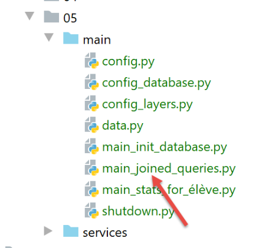
Le script [main_joined_queries] s’appelle ainsi parce qu’il vise à mettre en lumière les requêtes faites implicitement par [sqlalchemy] pour récupérer des informations appartenant à plusieurs tables. Ces requêtes cachées au programmeur sont faites à chaque fois qu’une propriété d’une entité a été associée à la fonction [relationship] dans le mapping de l’entité. Par exemple :
Ci-dessus, le mapping entre l’entité [Note] et la table [notes] :
- ligne 5, lorsque la propriété [élève] d’une entité [Note] est demandée pour la 1ère fois, elle sera cherchée dans la table [élèves] via une requête SQL. Tant que cette propriété n’a pas été demandée, elle reste indéfinie (lazy load). Une fois qu’elle a été obtenue, sa valeur reste en mémoire de l’ORM. Lorsqu’elle sera référencée une deuxième fois, l’ORM délivrera immédiatement sa valeur sans passer par une nouvelle requête SQL. Tout cela est transparent pour le développeur ;
- idem pour la propriété inverse [Elève.notes] (backref), ligne 5 ;
- idem pour la propriété [Note.matière] et sa propriété inverse [Matière.notes] (backref), ligne 6 ; Le script [main_joined_queries] est le suivant :
Les commentaires suffisent à comprendre le code.
On crée une configuration d’exécution pour MySQL :
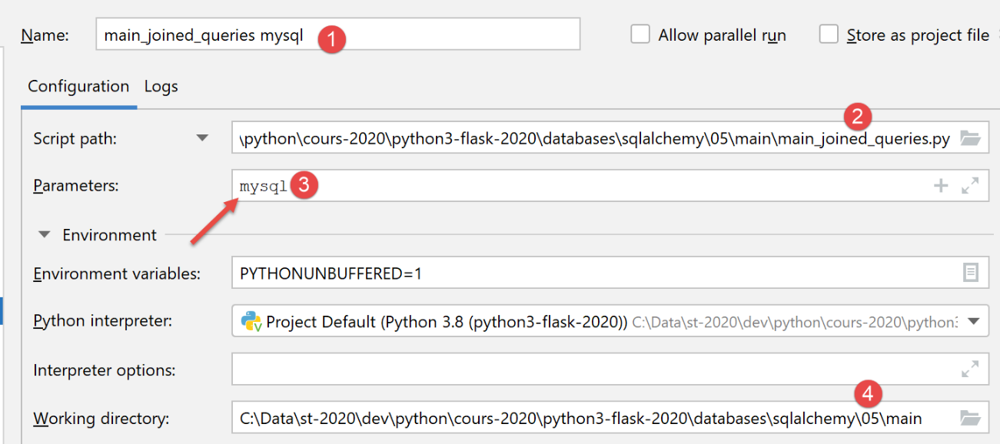
Les résultats de l’exécution sont les suivants :
Pour comprendre ces résultats, il faut se rappeler qu’on a exclu certaines propriétés du dictionnaire des entités (cf |configuration|) :
Ainsi, lorsqu’on écrit [print(f"élève={élève}")] ligne 26 du code, la ligne 1 ci-dessus nous dit que les propriétés ['_sa_instance_state', 'notes', 'classe'] ne seront pas affichées. C’est ce qu’on voit ligne 3 des résultats. Toutes les autres propriétés sont affichées. Ainsi, toujours ligne 3, on découvre une nouvelle propriété [classe_id] qui n’existait initialement pas dans l’entité [Elève]. Cette propriété correspond directement à la colonne [classe_id] de la table [élèves]. Ainsi [sqlalchemy] a jouté les propriétés suivantes à l’entité [Elève] : [classe_id, _sa_instance_state, notes]. Il faut en avoir conscience, notamment parce qu’elles ne doivent pas déjà exister dans l’entité mappée.
Les propriétés exclues du dictionnaire des entités sont importantes. Si par exemple, on n’exclut pas les propriétés [notes, élève] de l’entité [Elève] alors l’opération [print(f"élève={élève}")] va les afficher et va donc, comme il vient d’être expliqué, provoquer des requêtes SQL implicites (lazy loading) pour récupérer les valeurs de ces propriétés. Si, comme ici, c’est une liste d’élèves qui est affichée, les opérations SQL implicites sont faites pour chaque élève. Cela peut être d’une part inutile et d’autre part sûrement coûteux en temps d’exécution.
Pour exécuter le script avec une base PostgreSQL, on crée la configuration d’exécution suivante :
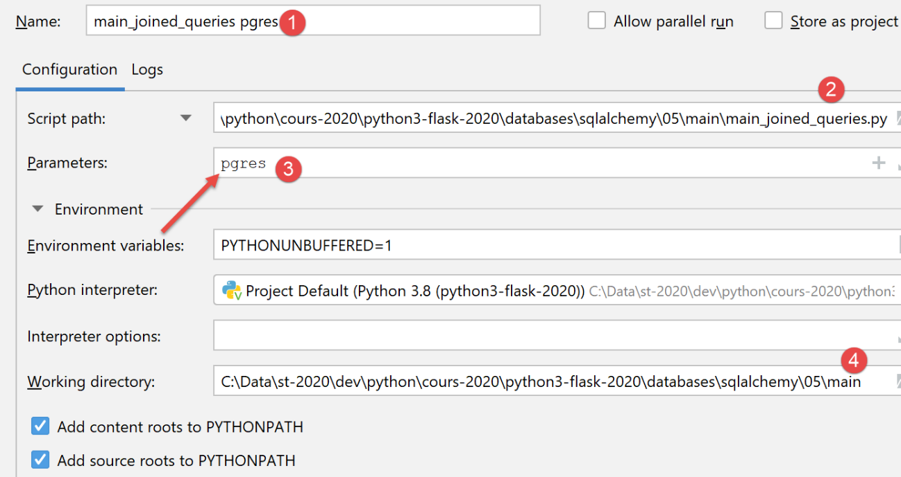
L’exécution donne les mêmes résultats qu’avec MySQL.
19.6.9. Le script [main_stats_for_élève]
Le script [main_stats_for_élève] est celui déjà utilisé dans l’application |troiscouches v01]. Il s’appelait alors [main]. C’est une application console permettant d’obtenir certains indicateurs sur les notes d’un élève : [moyenne pondérée, min, max, liste]. Il s’insère dans l’architecture suivante :
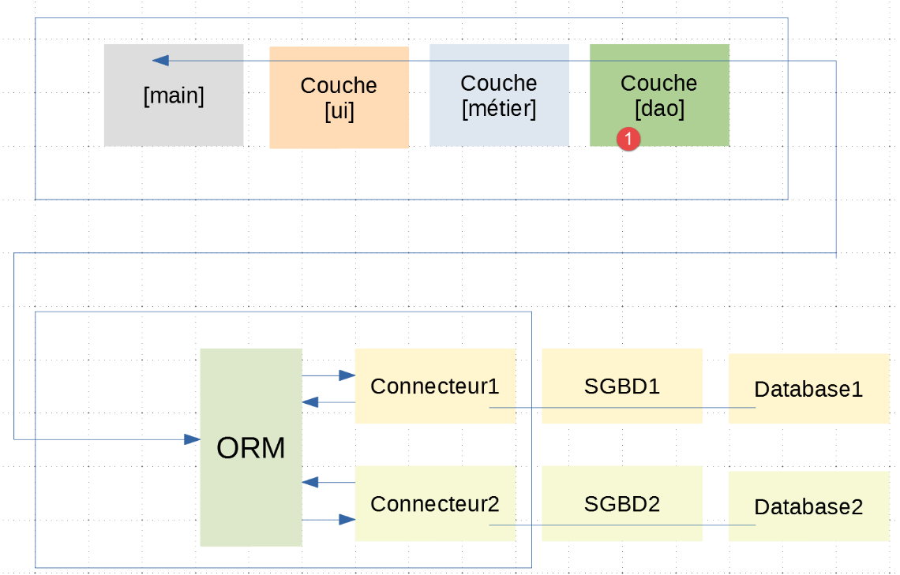
Dans cette architecture en couches, seule la couche [dao] a été changée entre l’application |troiscouches v01| et celle-ci. Comme la nouvelle couche [dao] respecte l’interface [InterfaceDao] de l’ancienne couche [dao], les couches [ui, métier] n’ont pas à être changées. On peut donc continuer à utiliser celles définies dans l’application |troiscouches v01|.
Le script [main_stats_for_élève] implémente la couche [main] du schéma ci-dessus de la façon suivante :
- ligne 20 : on récupère une référence sur la couche [ui] dans la configuration de l’application ;
- ligne 24 : on lance le dialogue avec l’utilisateur à l’aide de l’unique méthode de la couche [ui] ; Une configuration d’exécution pour PostgreSQL serait la suivante :
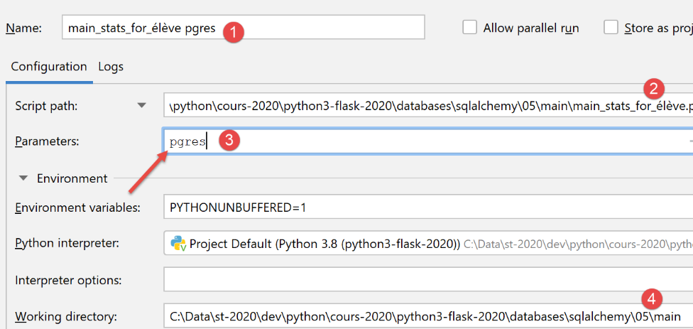
Voici un exemple d’exécution avec cette configuration :